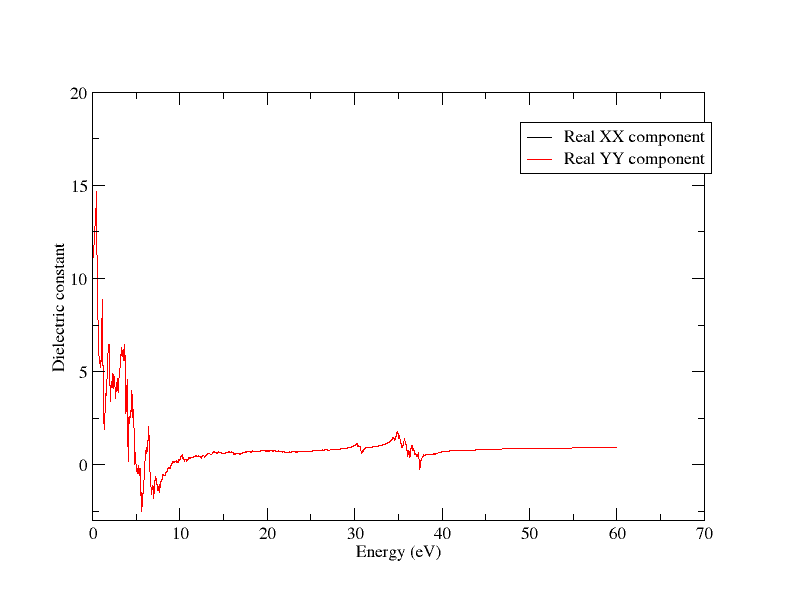
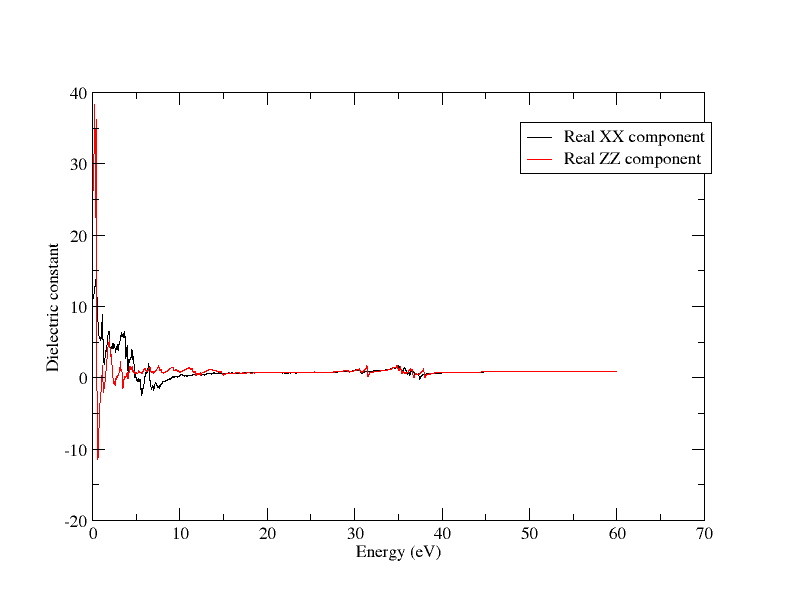
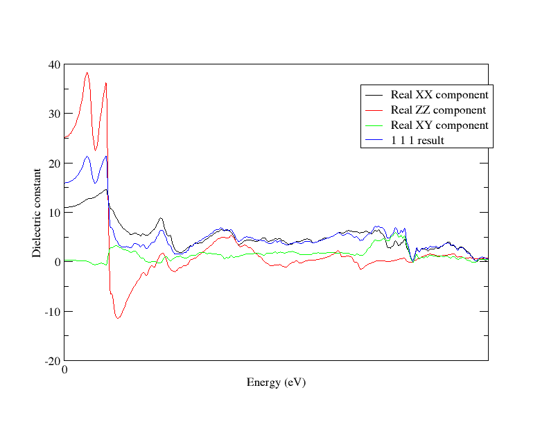
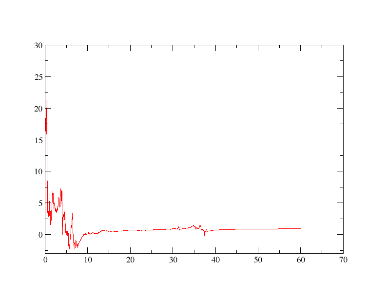
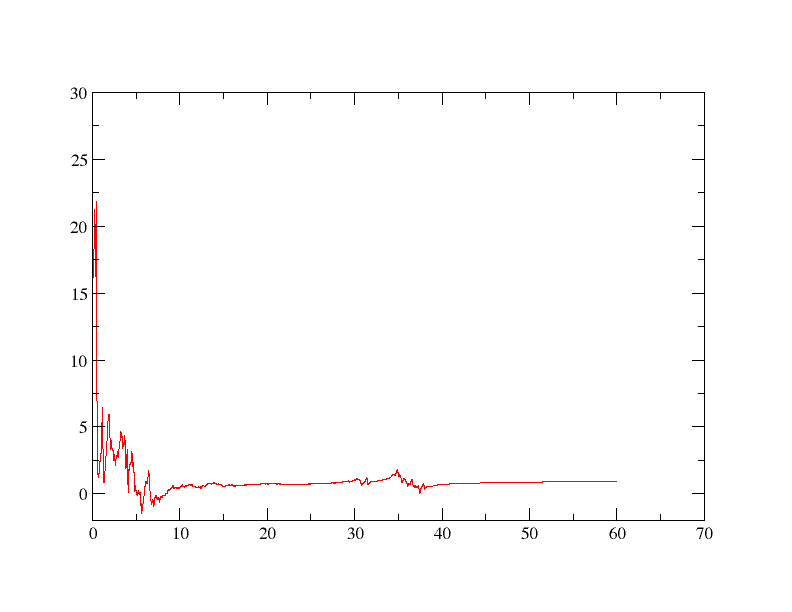

光学
Optados 可以获取多种结构的众多光学性质，这些性质均依赖于与之相互作用的光的波长（能量）。在本教程中，我们将对金红石（TiO）进行 Optados 光学计算。2) - 一种具有各向异性光学性质的双折射晶体，用于研究其单晶和多晶（各向同性）性质。在本教程中，我们将使用 xmgrace 为了绘制所有内容，但欢迎使用您偏好的软件。
我们将使用单元格文件
rut.cell
%BLOCK LATTICE_ABC
4.6257000 4.6257000 2.9806000
90.0000000 90.0000000 90.0000000
%ENDBLOCK LATTICE_ABC
%BLOCK POSITIONS_FRAC
Ti 0.0000000 0.0000000 0.0000000
O 0.2821000 0.2821000 0.0000000
%ENDBLOCK POSITIONS_FRAC
SYMMETRY_GENERATE
KPOINTS_MP_GRID 10 10 10
SPECTRAL_KPOINTS_MP_GRID 14 14 14
这 cell 该文件是使用 cif2cell 程序，基于 COD 编号为 1010942 的结构获得的，该结构位于 晶体学开放数据库
我们将首先使用上述单元格运行一个castep计算 param 文件
rut.param
一旦完成这一点，我们就可以进行光学Optados计算。
展示双折射现象
我们将首先考察介电张量。我们通过使用Opdatos输入文件来实现这一点。
rut.odi
TASK : optics
JDOS_SPACING : 0.01
JDOS_MAX_ENERGY : 60
EFERMI : optados
DOS_SPACING : 0.1
BROADENING : adaptive # Default
ADAPTIVE_SMEARING : 0.4 # Default
OPTICS_GEOM : tensor # Default
OPTICS_LOSSFN_BROADENING : 0.0 # Default
这条线 TASK : optics 关键在于此，因为这行内容告诉我们进行光学计算。另一条至关重要的语句是 OPTICS_GEOM : tensor - 这会告诉程序计算金红石的完整介电张量。这将生成两个输出文件： rut.odo 并且 rut_epsilon.dat — 我们关注的是后者。
输出文件开始看起来像
# Component 1
0.0000000000000000 10.985963719914423 0.0000000000000000
1.0001666944490749E-002 10.986133776534746 4.5560614006426980E-003
2.0003333888981498E-002 10.990669467897412 5.9329124271557589E-003
separate.py
input_file = 'rut_epsilon.dat'
def write_to_file(component,lines):
file_name = "rut_tens" + str(component) + ".dat"
with open(file_name,"w") as f:
f.writelines(lines)
with open("rut_tens.dat", "r") as f:
lines = f.readlines()[::-1]
component_lines = []
component = 6
for line in lines:
component_lines.append(line)
if "Componen" in line:
write_to_file(component,component_lines)
component -= 1
component_lines = []
说明
建议复制并在此单独创建一个目录——我们将把该输出结果与后续计算进行对比。在以后的指令中，该目录将位于“tensors”目录下。
我们现在为3x3张量的每个分量有6个文件（请记住，该张量是对称的，即） \epsilon_{xy} = \epsilon_{yx}). rut_tens1.dat 对应于 \epsilon_{xx}，2 和 3 分别对应 yy 和 zz，而 4、5 和 6 对应 xy、xz 和 yz。
现在我们已经拥有所有组件，让我们开始真正查看结果。首先，让我们绘制实部的 \epsilon_{xx} 并且 \epsilon_{yy} 在同一张图上。我们可以使用批处理文件来实现这一点。
plot_12_together.bat
READ BLOCK "rut_tens1.dat"
BLOCK xy "1:2"
S0 LEGEND "Real XX component"
READ BLOCK "rut_tens2.dat"
BLOCK xy "1:2"
S1 LEGEND "Real YY component"
XAXIS LABEL "Energy (eV)"
YAXIS LABEL "Dielectric constant"
并使用xmgrace进行绘图
xmgrace -batch plot_12_together.bat
这让我们得到如下图形：

只有一条线可见——它们（几乎）完全重叠，这意味着 \epsilon_{xx} = \epsilon_{yy}现在我们来尝试比较 \epsilon_{xx} 与 \epsilon_{zz} - 你所需要做的只是制作 2并 块 rut_tens3.dat （并相应地修改图例）。

这是一个相当有趣的结果：这似乎表明材料在不同方向上的介电函数是不同的——该材料具有光学各向异性。由于在两个方向上是相同的，它会被认为是双折射的。
检查介电张量
现在我们已经得到了介电函数张量，让我们来考察它与（各向异性）光学性质之间的对应关系。 我们将再次运行 Optados（无需重新运行 Castep），修改该行
在 rut.odi 文件到行
让我们将介电函数输出与 \epsilon_{xx} 我们从张量得到的输出。运行
xmgrace rut_epsilon.dat tensors/rut_tens1.dat
我们会得到与之相同的图像。 1st 一个这完全不足为奇：如果光在 xx 方向被偏振，它将有效感受到 \epsilon_{xx} 介电函数。
让我们尝试一个更有趣的例子——将方向线改为
OPTICS_QDIR : 1 1 1
现在结果不应与任何内容一致。为了说明这一点，让我们将其与……进行比较。 \epsilon_{xx}, \epsilon_{zz} 并且 \epsilon_{xy}，全部在同一个图上——幸运的是，xmgrace 使得将它们一起绘制成图非常容易。我们将修改批处理文件以包含所有这些内容——
compare.bat
READ BLOCK "tensors/rut_tens1.dat"
BLOCK xy "1:2"
S0 LEGEND "Real XX component"
READ BLOCK "tensors/rut_tens3.dat"
BLOCK xy "1:2"
S1 LEGEND "Real ZZ component"
READ BLOCK "tensors/rut_tens4.dat"
BLOCK xy "1:2"
S2 LEGEND "Real XY component"
READ BLOCK "rut_epsilon.dat"
BLOCK xy "1:2"
S3 LEGEND "1 1 1 result"
XAXIS LABEL "Energy (eV)"
YAXIS LABEL "Dielectric constant"
WORLD XMAX 5
我们还把图形缩小了（仅最高到5eV），以便更清楚地看到重叠（或缺乏重叠）。这是我们得到的输出：

你可以尝试将其与其他任何值进行比较，但你会发现它们完全不同。那么这与张量有什么关系呢？
考虑张量的一般性质，我们知道张量在任意方向上的值由以下方程给出
哪里 \epsilon' 介电常数在哪个方向上？ \hat{\mathbf{n}}，以及 \mathbf{\epsilon} 是介电矩阵。
说明
在本教程中，一个符号被加粗且下划线（如 \underline{\mathbf{\epsilon}}) 表明它是一个矩阵，而仅用粗体（如 \mathbf{n}) 表明它是一个矢量。
让我们快速梳理一下在(111)方向上我们预期的结果，并将其与Optados的计算结果进行比较。为了获得
$$ \underline{\mathbf{\epsilon}} \hat{\mathbf{n}} $$ 我们做
然后为了得到最终结果我们执行
$$ = \frac{1}{3} \bigg ( \varepsilon_{xx} + \varepsilon_{yy} + \varepsilon_{zz} + 2(\varepsilon_{xy} + \varepsilon_{yz} + \varepsilon_{zx}) \bigg ) $$
让我们使用我们分离的介电函数张量文件来验证这一点。我们将编写一个Python脚本，得到等于上述方程的函数，并将其与(111)方向极化的案例绘制在同一图表上。
你可以使用该脚本
get_in_direction.py
import numpy as np
eps = {key: np.loadtxt(f"rut_tens{i}.dat")
for i, key in enumerate(('xx', 'yy', 'zz', 'xy', 'xz', 'yz'))}
eps_vals = {key: val[:, 1] for key, val in eps.items()}
energies = eps['xx'][:, 0]
eps_111_values = (sum(eps[ind] for ind in ('xx', 'yy', 'zz')) +
2*sum(eps[ind] for ind in ('xy', 'xz', 'yz')) / 3
output_data = np.column_stack((energies, eps_111_values))
output_filename = "rut_111_out.dat"
np.savetxt(output_filename, output_data, fmt='% .16e', header="Energy (eV) Effective Epsilon_111")
这给出了输出的 上述方程 对所计算并存储在 rut_111.dat现在让我们看看这两个结果是否一致：我们来尝试
xmgrace rut_epsilon.dat tensors/rut_111_out.dat
使用 rut_epsilon.dat 来自我们的 上次的 Optados 计算我们应该看到这些线条几乎完全重合：

现在我们能够正确理解选择某一极化方向时所发生的情况，以及介电函数张量的真实含义。
各向同性介电函数
还有一个案例需要查看：当材料为多晶态，因而表现出各向同性时，其介电函数是什么？Optados 可通过更改文档中的关键词来轻松找到这一点。 rut.odi 文件到
OPTICS_GEOM : tensor
并移除的 OPTICS_QDIR 线（因为方向不再重要）。如果你想验证这是如何计算的，请使用上述相同的Python脚本，但修改计算部分
eps_111_values = (eps['xx'] + eps['yy'] + eps['zz'] +
2 * eps['xy'] + 2 * eps['xz'] + 2 * eps['yz']) / 3
到
for i in range(len(energies)):
tensor = np.array([
[eps['xx'][i], eps['xy'][i], eps['xz'][i]],
[eps['xy'][i], eps['yy'][i], eps['yz'][i]],
[eps['xz'][i], eps['yz'][i], eps['zz'][i]]
])
eigenvalues = np.linalg.eigvals(tensor)
iso_value = np.mean(eigenvalues)
iso_values.append(eps_111_value)
并更改变量，输出文件名等适当内容
这给出了每个能量对应的介电矩阵本征值的平均值，从而得到各向同性值。让我们将它们一起绘制出来，以查看是否相同：
xmgrace rut_epsilon.dat tensors/rut_111_eigen.dat
我们得到一张如下所示的图：

正如预期，这两条线重合：这表明多晶计算本质上是所有方向介电张量的平均值，而这正是我们对多晶样品的期望，因为在多晶样品中我们可以假设各个方向的可能性均等。